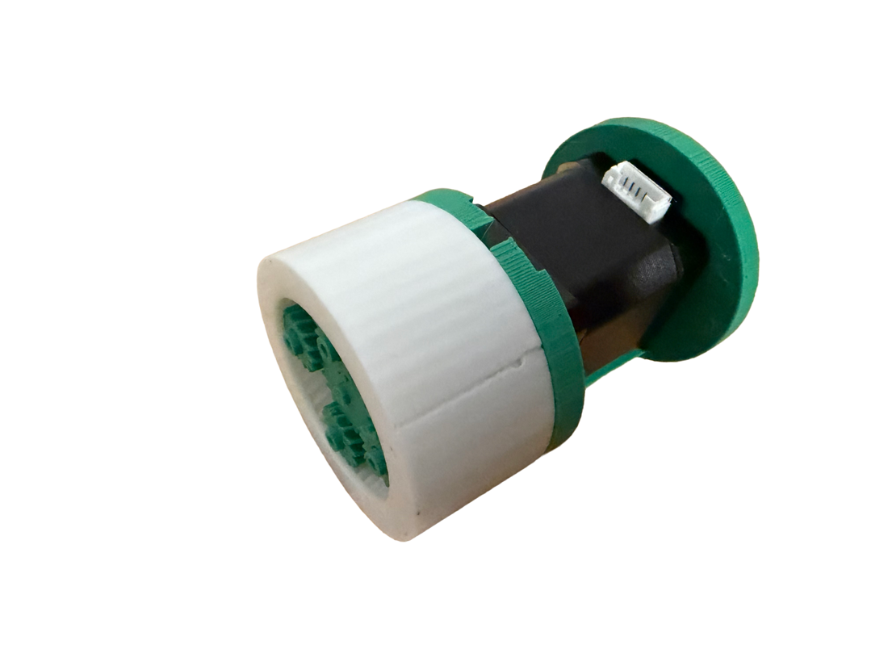
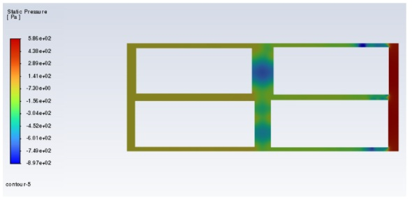

Mechanical engineering student, Olin College of Engineering
Engineering the future of surgery.
I'm Adi, a mechanical engineering student on a premed track. I design mechanisms, drivetrains, and prototypes, aiming to build medical technology like surgical robots.
About
I'm a first-year student at Olin College of Engineering, class of 2030, studying mechanical engineering and planning to pair it with premed coursework. I'm most interested in the place where mechanical design meets medicine, especially surgical robotics and assistive technology. I'm a Phoenix Scholar and an Olin Scholar.
This semester I'm on the drivetrain subteam of Olin Baja SAE, where I helped redesign the car's CVT guard. I'm also on the mechanical and actuation subteam at the Olin Assistive Technology Lab, which is building a braille reader, and I'm an undergraduate researcher in Huang's Lab, where I'm working with microbes that break down a bioplastic called PHB. Last summer I was a research intern at ACE Labs at Worcester Polytechnic Institute, modeling wind flow through a city in ANSYS to study how drones can deliver safely.
Outside of teams and labs, I build my own projects, including a 3D printed robotic arm with custom gearboxes. I work in SolidWorks and Onshape, and I'm comfortable with ANSYS, MATLAB, Python, 3D printing, and plasma cutting.
Featured projects

Surgical Robot System
A four-arm surgical robot designed to fix a known da Vinci problem: arms colliding with each other during surgery.

Planetary Gearbox for a Robotic Arm
A custom two-stage gearbox, about 10:1 overall, that raises each joint's output torque on my 5-axis arm.

CVT Guard
A lighter guard that follows the pulley shape and opens in two pieces on quick-release latches.

Urban Wind Simulation
A 2D CFD model of wind between buildings, built in ANSYS Fluent to study drone delivery in cities.
Contact
If you'd like to talk about my work, a project, or an opportunity, I'd be glad to hear from you.